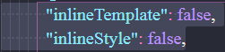
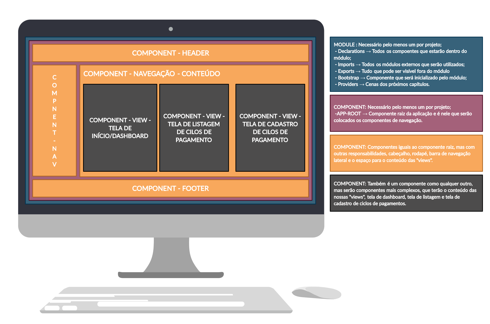
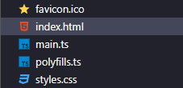
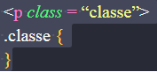
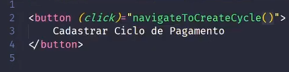
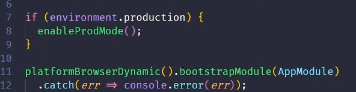

O que é:
É uma plataforma criada para o desenvolvimento de single page application
que dinamicamente reescreve a página a reescrevendo com novos dados
emitidos do servidor. Qualquer aplicação angular necessita de um modulo e
um componente no mínimo, e a maioria das criações são componentes que se
comportam de jeitos diferentes na aplicação.
Nesta aula veremos:
-Controller recebendo objetos de ciclos de pagamento.
-Método que busca todos os ciclos.
-Busca pelo ID.
PRÉ REQUISITOS
Por até então termos trabalhado com um projeto de configuração mínima, é preciso ir até angular.json e definir ‘inlineTemplate’ e ‘InlineStyle’ para falso, para que estes não fiquem no mesmo arquivo, e assim os três arquivos do componente sejam gerados.


Por onde começar a aplicação 
STYLES
Permite com que sejam incluídos e definidos estilos que serão aplicados em toda o seu projeto, de forma global. É importante ressaltar como os arquivos de estilo CSS dentro de cada componente só causam alterações locais nestes.
IMPLEMENTAÇÃO FRONT-END
Aplicação cliente - aplicação gerada com a utilização do CLI do angular por linha de
comando para criar a aplicação.
Antigamente gerava-se tudo na mão e hoje a partir do momento de usar o comando ng serve
ele já compila e já abre a aplicação no browser.
Comparação: fazer coisas por linha de comando, clicando e selecionando linhas de comando,
com ideias parecidas porem com interface por linha de comando e interface gráfica.
É possível referenciar um estilo no mesmo modelo de uma classe. Exemplo:

O estilo será atribuído a apenas este componente a não ser que faça isso diretamente no styles. Como fazer o botão de redirecionamento para outra página:
INICIAR TELA DE CADASTRO
TypeScript é a linguagem oficial Angular que surgiu como um superset do JavaScript, adicionando a este funcionalidades que nativamente não estão disponíveis ou requerem grande esforço para utilização, como tipagem de dados e Orientação a Objetos.
CRIANDO O MÓDULO PADRÃO
Use o ng generate coponent caminho desejado nome desejado para criar um novo componente,
contexto os três arquivos (HTML, CSS e Typescript) como o esperado.
Certos declarations e imports serão feitos já de forma automática.
Caso queria já rodar a aplicação, também use o ng serve –open.
Note que o -- É parâmetro que através do open indica para abrir o navegador já no local.
ENTENDENDO A CODIFICAÇÃO
@NgModule & @Module: É um padrão de decorator amplamente utilizado para
anexar qualquer módulo dentro da aplicação.
Declarations: Aponta todos os componentes que farão parte de tal módulo.
Imports: Serve para importar módulos externos.
Boostrap: Diz que componentes devem ser iniciados.
Qualquer componente que crie vira uma tag dentro do Typescript, por meio do selector.
A aplicação começa com os arquivos favicon.ico, *index.html*, *main.ts*, polyfills.ts e *style.css*,
com este último sendo utilizado para colocar e definir estilos a serem aplicados sobre todo o programa.
Import's funcionam igual aos do node, mas com uma sintaxe diferente.
app-root -> primeiro componente (app.component.ts)
A aplicação começa pelo arquivo main.ts, que possui uma verificação para ver se estamos em ambiente
de produção sendo ela:

A linha de código acima significa que caso não esteja em ambiente de produção devemos inicializar o appModule o qual deve se encontra na pasta app.PÁGINA DE LISTAGEM
É preciso que se faça a adição de um novo terminal se totalizando 2:
-Um rodando a app angular
-Outro para criar e manipular informações como os compontes.
E então criação de um novo componente que deve ser gerado em views/cycles/nome
EXEMPLO: ng generate component views/cycles/list-cycles Vale ressaltar que ao se abrir um novo terminal deve-se entrar na pasta determinada via cd.